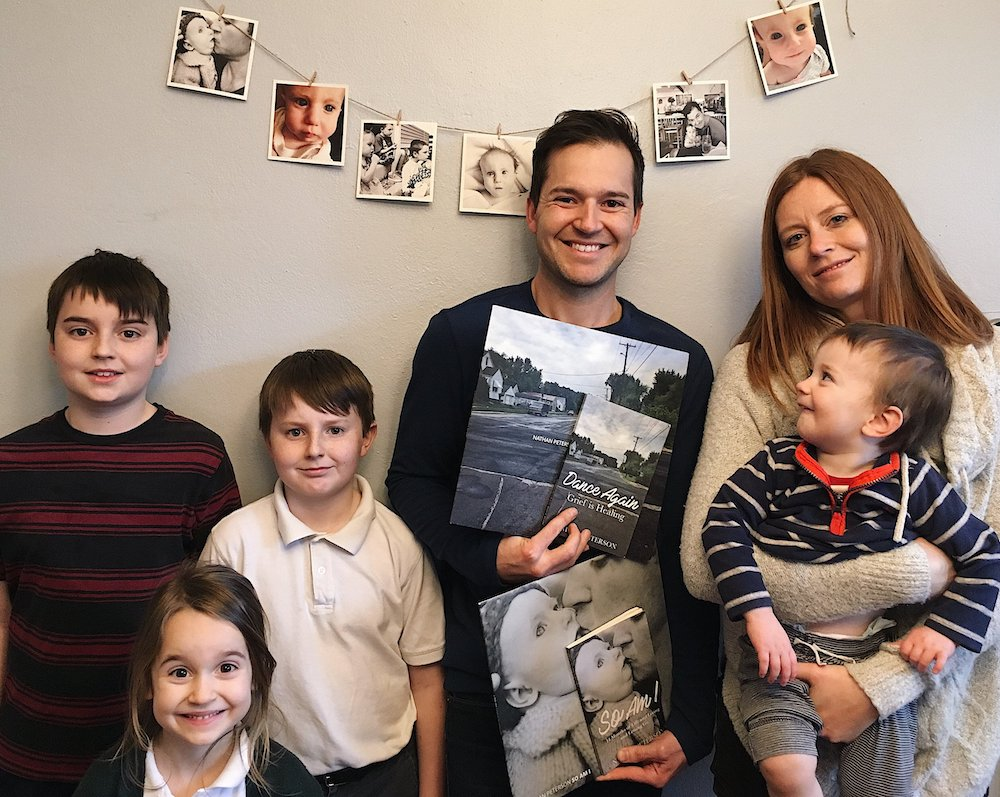
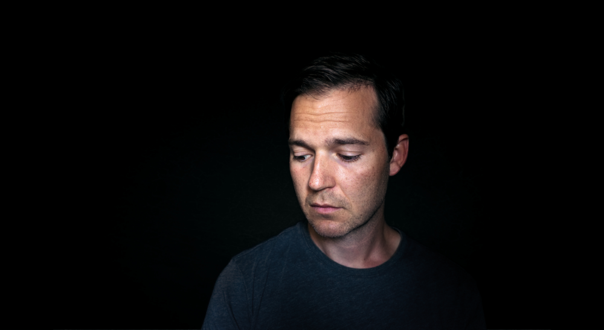

<section class="section">
  <div class="container" style="margin-top:50px;max-width:1000px;">
    <p style="margin-bottom:15px;">I live in Illinois with my beautiful wife, Heather, who is a wonderful musician and has played with me for 20 years. We have 5 children — three boys and two girls — one of whom was born with Trisomy 18 and now has gone ahead of us. I was born in Chicago and as a small child lived in Colorado and Germany. I grew up in the cornfields of DeKalb Illinois, outside of Chicago.</p>
    
    <p style="margin-bottom:30px;">Taken the day I finished my most recent project. <3</p>
    <h2 class="title">Nathan Peterson's Official Bio</h2>
    <div class="columns">
      <div class="column">
        <p style="margin-bottom:15px;">American singer-songwriter Nathan Peterson has been creating music as Hello Industry for almost two decades.
        <p style="margin-bottom:15px;">After four album releases and numerous iterations of Hello Industry’s live show, including their fully classical Black and White concert, Nathan has stripped everything down to only a guitar, his voice, and a song. Nathan is currently celebrating the release of two solo albums and two books — So Am I: Life, Living, and Letting Go and Dance Again: Grief is Healing — about the life and passing of his daughter, Olivia.</p>
        <p style="margin-bottom:15px;">During Nathan’s 20 years of writing, recording, and performing, he has created a body of work which invites our culture to rest, here and now, in the midst of the storms of life. Nathan’s words and voice invite us inward, toward our own Center, where our fear is the loudest; where our strength and hope are their brightest.</p>
        <p style="margin-bottom:15px;">Born in Chicago and raised in Germany, Colorado, and the Chicago suburbs, Nathan now lives with his wife and 5 children in Central Illinois.</p>
      </div>
      <div class="column">
        
        <p class="has-text-centered"><a href="https://drive.google.com/open?id=1BVf0tZNfZUyuFZqBzxJt7jAQuhniN_VX" target=_"blank" ref="noreferrer">Download hi-res press photos</a></p>
      </div>
    </div>
  </div>
</section>
